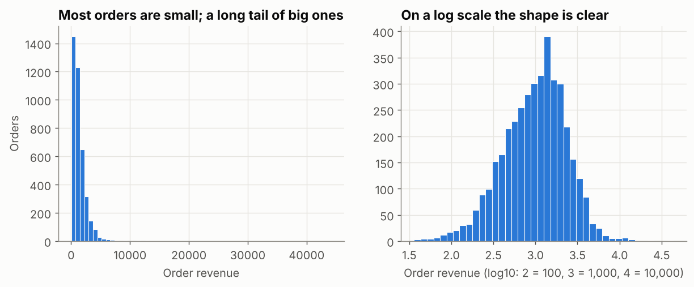
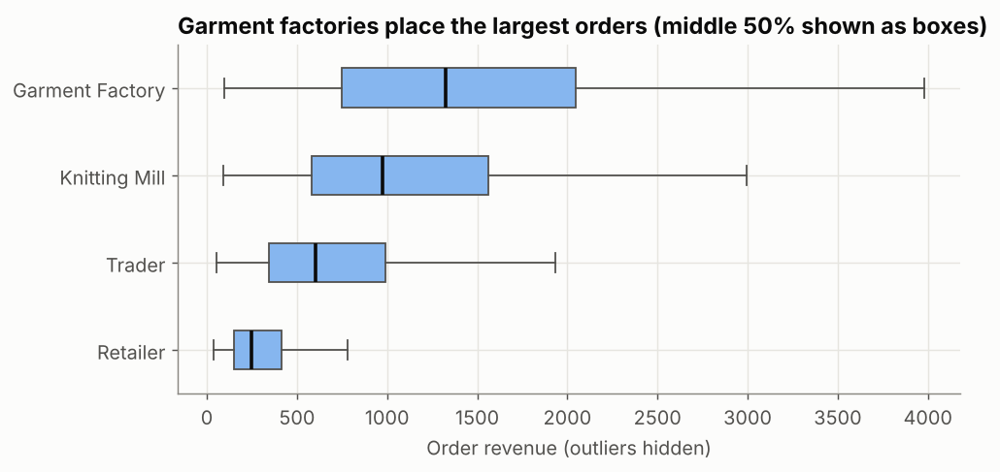
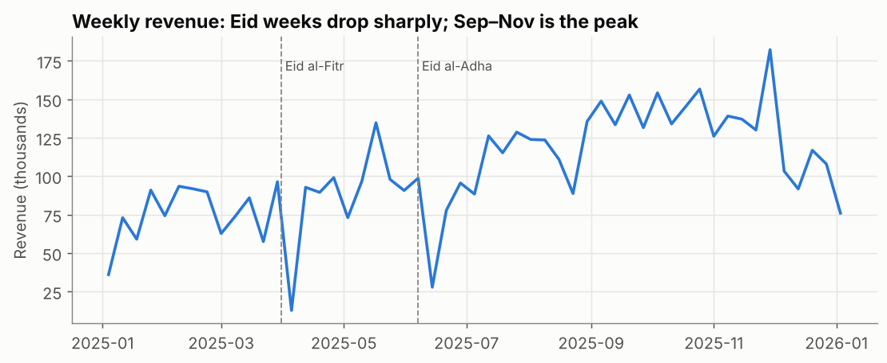

EDA Part 1: Analytical Questions, Distributions and Patterns
Turn a vague request into analytical questions, profile a dataset, describe skewed distributions with the right statistics and charts, and find patterns over time and across groups.
Before you start
- data-science-scripts.zipAll 21 Phase 2 lesson scripts (NumPy to research thinking), shared chart style, data folder and solutions · 230 KB
- orders_2025.csv4,246 clean orders for 2025 (synthetic, fixed seed): region, segment, channel, product, price, discount, status, delivery days, revenue · 472 KB
What is it?
EDA is a structured first look at data to understand it before reporting or modelling. It has three parts:
| Part | Question | Typical tools |
|---|---|---|
| Analytical questions | What do we need to know, and can this data answer it? | A short question list, a data profile |
| Distributions | What values does one variable take, and how often? | describe, percentiles, histogram, box plot |
| Patterns | How do values change over time or across groups? | resample, groupby, line and bar
charts |
(Relationships between variables and anomalies are Part 2.)
Why it matters at work
Managers rarely ask precise questions; “how’s sales doing?” is typical. Turning that into answerable questions, and spotting skew, seasonality and data issues early, is what separates an analyst from a report generator. Data science interviews often include a take-home EDA task.
The script is 09_eda_patterns_distributions.py.
Step 1: from a vague request to analytical questions
The sales director says: “Give me a picture of 2025.” Rewrite it as questions that have a measurable answer:
| Vague | Analytical question | Data needed |
|---|---|---|
| How did we do? | What was net revenue per month, and how did it compare with the previous month? | order_date, revenue,
status |
| Who matters? | What share of revenue comes from each segment and the top 10 customers? | segment, customer_id |
| What’s a typical order? | What’s the median order value, and how big are the largest orders? | revenue |
| Any problems? | How often are deliveries late, and where and when? | delivery_days, promised_days,
region |
Write questions before charts, so you know when you’re done.
Step 2: profile the data
profile = pd.DataFrame({
"dtype": orders.dtypes.astype(str),
"missing": orders.isna().sum(),
"distinct": orders.nunique(),
})
print(profile.loc[["order_date", "customer_id", "region", "segment", "product", "quantity", "revenue", "delivery_days"]]) dtype missing distinct
order_date datetime64[us] 0 340
customer_id str 0 60
region str 0 5
segment str 0 4
product str 0 12
quantity int64 0 2505
revenue float64 0 4169
delivery_days float64 374 17340 order dates in a 365-day year (Fridays and holidays are missing), 60 ordering customers, and 374 missing delivery times we already explained in the Cleaning lesson.
Step 3: the distribution of order revenue
rev = net["revenue"]
print(rev.describe(percentiles=[0.1, 0.5, 0.9, 0.99]).round(0))
print("skewness:", round(rev.skew(), 2))count 3963.0
mean 1382.0
std 1469.0
min 36.0
10% 313.0
50% 1060.0
90% 2698.0
99% 6015.0
max 44128.0
Name: revenue, dtype: float64
skewness: 9.27
How to read it:
- Right-skewed (skewness 9.27; 0 would be symmetric): many small orders, a few huge ones.
- The mean (1,382) is above the median (1,060) because the big orders pull it up. For “a typical order”, report the median.
- The 99th percentile is 6,015 but the maximum is 44,128: a handful of bulk orders. They’re real (see Cleaning), and they matter for revenue, but they would dominate any average.
- A log scale turns the squashed left chart into a readable shape. Money, quantities and web traffic are often skewed like this.
Step 4: distributions by group
print(net.groupby("segment")["revenue"].describe()[["count", "25%", "50%", "75%", "max"]].round(0)) count 25% 50% 75% max
segment
Garment Factory 2594.0 750.0 1327.0 2048.0 44128.0
Knitting Mill 643.0 579.0 977.0 1560.0 13927.0
Retailer 256.0 150.0 247.0 415.0 4706.0
Trader 470.0 342.0 602.0 991.0 4104.0
A box plot shows the median (thick line), the middle 50% of orders (the box, from the 25th to the 75th percentile) and the typical range (whiskers). A typical garment-factory order is about 5× a typical retailer order.
Step 5: patterns over time
weekly = net.set_index("order_date")["revenue"].resample("W-SAT").sum() / 1000
print(weekly.idxmin().date(), round(weekly.min(), 0), "|", weekly.idxmax().date(), round(weekly.max(), 0))2025-04-05 13.0 | 2025-11-29 182.0
"W-SAT"makes weeks that end on Saturday. (The first and last weeks of the year are partial, so ignore their dips.)- Pattern 1, holidays: the weakest week (ending 5 April, 13 thousand) is the Eid al-Fitr week; Eid al-Adha in June shows the same drop.
- Pattern 2, seasonality: revenue climbs from July and stays high from September to November (the export season), with the strongest week ending 29 November.
- Weekly data shows holiday effects that monthly totals hide.
Step 6: patterns across categories
mix = net.groupby("category")["revenue"].sum().div(net["revenue"].sum()).mul(100).round(1)
print(mix.sort_values(ascending=False))category
Fabric 43.1
Yarn 41.0
Trims 15.8
Name: revenue, dtype: float64Fabric and yarn bring 84% of revenue. Combined with the margin results (Trims: 35.5% margin), that’s a classic trade-off worth raising: the smallest category is the most profitable.
Common mistakes
| Mistake | What happens | Fix |
|---|---|---|
| Starting with charts, no questions | Dozens of plots, no conclusions | Write 3–5 questions first |
| Reporting the mean of skewed data as “typical” | Overstates the typical order | Median + percentiles; mention skew |
| One histogram with default bins | Hidden shape or fake gaps | Try a few bin counts and a log scale |
| Monthly totals only | Holiday weeks and weekday effects disappear | Look at weekly or daily data too |
| Counting partial periods as real dips | False “drops” at the start and end of the year | Flag or exclude incomplete weeks/months |
Try it yourself
Task: Describe the distribution of delivery days for delivered orders: counts per value, median, mean, and the share of deliveries taking more than 7 days. Is it skewed?
Show the solution
dd = orders.loc[orders["status"] == "Delivered", "delivery_days"]
print(dd.value_counts().sort_index().to_dict())
print("median:", dd.median(), "| mean:", round(dd.mean(), 2), "| share over 7 days:", round((dd > 7).mean() * 100, 1), "%"){1.0: 566, 2.0: 887, 3.0: 873, 4.0: 611, 5.0: 379, 6.0: 248, 7.0: 137, 8.0: 79, 9.0: 44, 10.0: 24, 11.0: 10, 12.0: 4, 13.0: 4, 14.0: 2, 15.0: 2, 16.0: 1, 17.0: 1}
median: 3.0 | mean: 3.44 | share over 7 days: 4.4 %Quick quiz
1. Order revenue has mean 1,382 and median 1,060. What does that suggest?
- The data is symmetric
- The data is right-skewed: a few large orders pull the mean up
- There are errors in the data
Show answer
B. Large values pull the mean towards them; the median isn’t affected.2. What does the box in a box plot show?
- The minimum to maximum
- The middle 50% of values (25th to 75th percentile)
- The mean ± one standard deviation
Show answer
B. The line inside is the median.3. Why write analytical questions before making charts?
- Charts are slow to make
- Questions define what to measure and when the analysis is finished
- Managers prefer questions to charts
Show answer
B.Summary
- Start with analytical questions, then profile the data (types, missing, distinct).
- Describe distributions with percentiles, the median and skew; use histograms (try a log scale) and box plots by group.
- Look for patterns over time at more than one grain (weekly shows holidays; monthly shows seasons), and across categories.
- Write each finding as a sentence with a number.
Job-ready check
Interview question: “You’re given a sales dataset and one hour. What do you do?”
Strong answer: “I clarify the business question and write three to five analytical questions. I profile the data (types, missing values, duplicates, date range) and reconcile one known total. Then I look at the key distributions, trends at weekly and monthly level, and the main group comparisons, and finish with a short written list of findings, caveats and next questions, rather than a stack of charts.”
Mini project: Write a one-page EDA note for
orders_2025.csv that answers the four analytical questions
in Step 1, each with one number and at most one chart.
AI Mentor Prompt
Paste this into ChatGPT, Claude, Gemini, or another capable assistant to turn this tutorial into an interactive mentoring session.
You are my hands-on Python, statistics and data-science mentor.
I am currently studying:
"EDA Part 1: Analytical Questions, Distributions and Patterns"
My level:
Intermediate
Teach me this topic interactively rather than giving me a long lecture.
Use this sequence:
1. Check what I already understand with one short diagnostic question.
2. Explain the concept in simple language and give me the mental model first.
3. Give me one small task using code, SQL, configuration, data, or architecture as appropriate.
4. Wait for my attempt before showing a complete solution.
5. Review my work and explain both what is correct and what needs improvement.
6. Help me debug errors step by step instead of immediately replacing my work.
7. Increase the difficulty gradually and connect each new step to the previous one.
8. Relate what I am learning to real professional data/AI engineering work.
9. Ask me to explain an important decision in my own words so you can check my understanding.
10. At the end, ask me to build or modify one small feature independently.
Important rules:
- Do not do the entire exercise for me unless I explicitly ask.
- Explain unfamiliar terminology before using it heavily.
- Prefer current, production-relevant practices over outdated shortcuts.
- Distinguish clearly between concepts, tool-specific behaviour, and optional alternatives.
- If a technical fact, API, syntax, version, or best practice may have changed, verify it against current official documentation before teaching it.
- Never invent command output, test results, benchmark numbers, cloud behaviour, or data results.
- If something cannot be executed in the current environment, say so and give me the exact command or verification step I should run.
- Keep me actively coding, querying, configuring, reasoning, or debugging throughout the session.
- When useful, work from the tutorial practice files (data-science-scripts.zip, orders_2025.csv) instead of inventing unrelated examples.
The concepts I need to master are:
- Analytical questions
- Distributions
- Patterns
- eda
- exploratory data analysis
- analytical question
- data profile
- distribution
Start by asking me one diagnostic question.Free resources to go deeper
- Python Data Science Handbook — Visualization with Matplotlib (histograms)
- Visualizing distributions of data
- Exploratory data analysis (NIST/SEMATECH e-Handbook)
Last reviewed: 2026-10-09